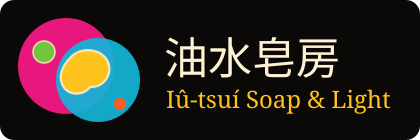

游標＝攪棒
按住 空白鍵 或長按池子＝壓錶玻璃
一九七八年起・手工冷製皂・每週五關燈開投影機
油水皂房
Iû-tsuí Soap & Light Show
- 地址
- 臺北市中山區雙城街 18 巷 7 號 1 樓
- 電話
- (02) 2595-1971
- 營業
- 週二至週六 12:00–20:00・週日 13:00–18:00・週一休
- 油水夜
- 每週五 20:30–21:30・NT$350 含一塊試做皂
滴一塊你的皂 →
店史・五張幻燈片
一台投影機，兩片錶玻璃Two clock glasses, one lamp
油和水不會混，所以畫面永遠有邊——這是阮秋月十九歲在俱樂部後台學到的第一件事，也是她後來做皂的第一條規矩。
011969中山北路「藍天鵝」俱樂部。來臺渡假的美軍週末聽樂團到天亮，十九歲的阮秋月被叫去顧後台那台高架投影機：兩片錶玻璃、一瓶嬰兒油、一盒食用色素。
021972渡假計畫停了，藍天鵝收店。老闆把投影機折價給她抵兩個月薪水。她帶回家，放在縫紉機旁邊。
031978雙城街開店做冷製皂。她說做皂跟打燈一樣，都是油、水、顏色——差在皂要等二十八天才能用。
042009女兒阮以澄從倉庫把投影機搬出來，換了風扇和 650 瓦燈泡，第一次在店裡的白牆上點亮。
052015週五油水夜開始：鐵門拉一半，燈全關，吳宗翰彈電子琴，阮秋月壓玻璃。客人跟著拍子滴色，散場前把那一池倒進模子。
店裡掛在投影機旁邊的五條
油水五規矩Five rules of the wet show
- 1
畫面住在圓裡
錶玻璃是圓的，投出去就是圓的。圓外面是黑牆，什麼都不放；兩台投影機的圓疊在一起，那一塊就更亮。
- 2
油是油，水是水
色胞會黏在一起、會分開，可是兩種顏色之間永遠有一條邊——邊上那一圈亮線是油和水的彎月面在折光。不准有漸層。
- 3
顏色是光，不是墨
燈從底下穿過染料，所以中間最亮、往邊緣暗下去；顏色只有飽和的那幾罐：洋紅、蛋黃、亞甲藍、苦艾綠、朱橙。沒有灰，沒有粉。
- 4
跟著鼓壓玻璃
上面那片錶玻璃一壓，整池攤開、彎月面變細變亮；一放，彈回來。畫面是跟著音樂呼吸的，不是跟著捲軸。
- 5
字也是投上去的
團名寫在幻燈片上，跟色胞一起投。所以字是燈的顏色，邊上有一點紅一點藍的色散，周圍有一圈光暈——不是印在牆上的。
280常備冷製皂 100 g
八款，苦茶油、米糠油、甜杏仁油打底，熟成滿 28 天才上架。
看皂架
380滴一塊・你的那一池
跟著電子琴滴色、壓玻璃，歌停就切成皂。28 天後來取。
現在滴